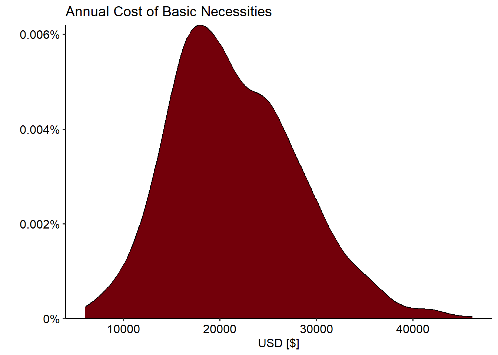
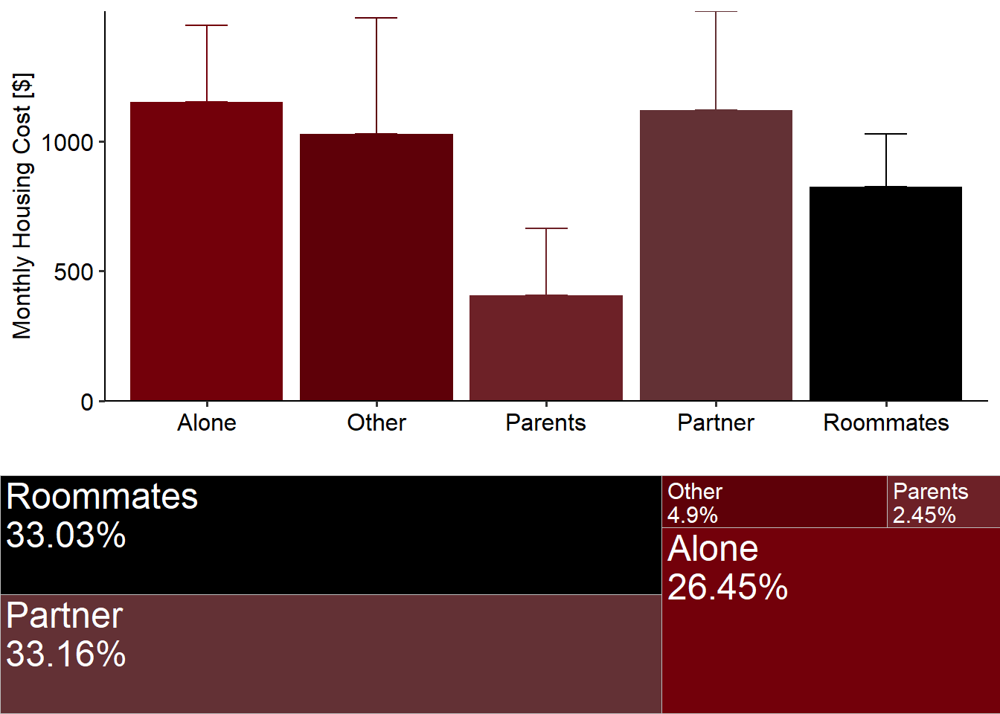
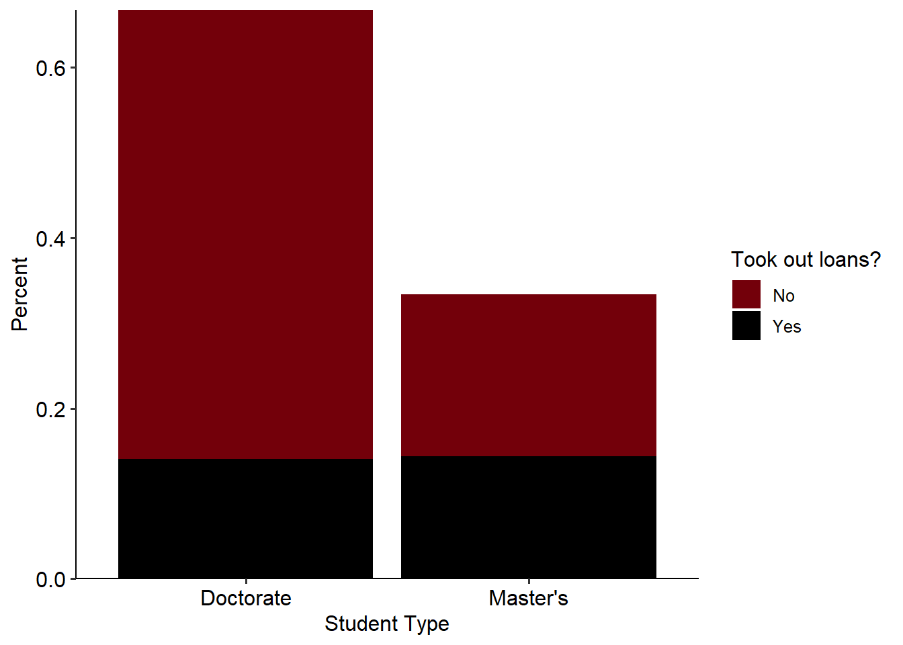

USC annual stipend (shown in garnet points) compared to other national universities (shown in grey). Green line indicates MIT living wage for a single individual, red line indicates the poverty level, black line is the regression of competitor universities.
Executive Summary
Graduate student pay is a priory issue for both the Graduate Student Association and the University as a whole. In the 2022 Graduate Student Needs Assessment, stipends and financial support was identified as the primary concern for graduate students. To evaluate the current condition of graduate student pay and the cost of living in Columbia, GSA sent a survey to all graduate students asking for them to voluntarily report their stipends and the cost of their basic needs (housing, food, transportation). With this information, GSA investigated how graduate student pay supports their basic needs and how pay compares to other national universities.
From an administrative and university perspective, low graduate student pay decreases the competitiveness of USC’s graduate programs. Graduate students are a critical function of the university. They provide work as teachers, researchers, and mentors throughout the university. To recruit top candidates to work as graduate students, USC needs to pay graduate students a rate competitive with the pay from other national universities. By comparing reported stipends by program to a national repository of graduate student pay rates, it was found that USC systematically pays less than other universities. Across all academic disciplines, USC pays $8,926.64 less than the market average, having adjusted for the cost of living in different metro areas. While there is large variation in graduate pay based on program type, below-market pay was a consistent finding for the vast majority of programs.
From a graduate student perspective, low stipend amounts have become a concern with the increased cost of living over recent years. It was found that all programs are paying below the living wage for a single individual in the Columbia Metro Area. When evaluating just the cost of basic necessities, graduate pay tends to be inadequate. The average graduate student stipend is $15,047.22/year. However, the average cost of basic necessities was $21,514.84/year. Many students then seek alternative methods to supplement their income, often through loans. 43.1% of Master’s students reported taking out loans while 21.1% of Doctoral students reported taking loans. There was a clear relationship between graduate student pay and the likelihood of taking out loans. While graduate students are pursuing advanced degrees in hopes of increasing career qualifications, often they also function as university employees. Graduate student pay should at a minimum facilitate students to meet their basic necessities without incurring debt.
To both remain competitive and properly support graduate student pay, USC needs to evaluate how to increase graduate student pay across all programs. Graduate student pay across the nation has become a major discussion in higher education. GSA’s analysis suggests that USC is falling critically behind in this issue. Recently, several universities have made plans to increase their graduate student pay. While graduate student pay is a complex issue due to the decisions made at several different levels (university, college, department), it is clear that low pay is an urgent issue for USC administration.
Market Analysis
Data Sources & Methods
To assess how other universities graduate student pay compares to USC, graduate student pay information was collected from a public-survey recording graduate stipends (link). For comparison, stipend pay information was limited to reports which were more recent than the 2020-21 academic year. Data were not fully QAQC’d so several reports had to be discarded. Additionally, only reports from national universities (ranked by US News top 250) in major metropolitan areas were considered. Finally, programs were only considered if they matched a program offered by USC for direct comparison. In total, this yielded 1388 individual reports from 769 programs (54 unique) across 138 US universities.
USC stipend data were collected from the 2023 GSA Stipend and Cost of Living Survey. After QAQC, 324 individual responses were available from 63 programs across all 11 Colleges/Schools in the University. Individual responses within a program were averaged to better estimate the standard stipend offered by a department.
To account for differences in cost of living between university locations, stipends were standardized to the living wage for a single individual in the metro area. These data were calculated from the MIT Living Wage Calculator. For visualization purposes, the poverty line was also accessed from this source. Additionally a simple linear regression for living wage predicting stipend was conducted using comparison universities to establish the “market average” stipend across regions. For reference the single-individual living wage in the Columbia metro area is $35,609.6/year (MIT Calculator).
Core Findings
1. USC is consistently below market
It was found that USC is systematically paying below the cost-of-living adjusted market average ($25,521.05). The average program stipend at USC is $15,865.83. It should be noted that our survey included a few professional students (~7.7% of respondents, 13.8% of programs) whose stipends are generally lower than that of academic graduate students. Additionally, professional students are not well represented in our comparison dataset. When removing professional students the average stipend is $16,594.41, still $8,926.64. While professional students can explain a few instances of extremely low wages seen in the above figure, they do not encompass all sub-poverty stipends. 30.4% of investigated programs have average stipends reported to be less than the poverty wage in Columbia, SC. There is very large variation between programs and program types. These data are explored further in Appendix A.
Low stipend pay is consistent across colleges and program types. Engineering programs are $8,702.78 below market average, Social Science $6,904.7 below; Humanities $10,036.84 below; and Natural Sciences $7,569.77 below. Comparisons by program, college, or program type can be explored using the stipend explorer widget. Note that the link may have expired if accessed later. To get specific data, you can explore Appendix A, or directly contact the Secretary of Data Management, Alex Bart, at AB93@email.sc.edu.
2. Higher ranked universities tend to pay graduate students higher.
Graduate stipend shown by US News Ranking. Garnet points indicate USC while grey indicates other universities
Graduate students play an important role in the university system. While US News Rankings are not a perfect indicator of a university’s overall performance, they provide a clear indicator for overall university prestige. It is clear that higher-ranked universities pay a higher graduate student pay. USC is currently ranked at 115. For this ranking, the distribution of graduate pay is shifted lower than would be expected.
Basic Needs Summary
Data & Methods
In the 2023 GSA stipend and cost of living survey, students were prompted to report the cost of their basic necessities. Respondents were able to select a range of values. When summarizing data, the mid-point of the ranges were used to calculate totals. In cases where respondents were able to report a category with no upper bound, the width of typical responses was added to the maximum value (for example, rent costs were reported in $200 bins with an option for ‘Greater than $1300’, those values were quantified as $1400). Thus, the cost of basic necessities may be underestimated for some individuals.
Basic necessities were recorded as: rent, utilities, food costs, transportation costs, out-of-pocket healthcare, and household goods.
Core Findings
1. Cost of basic necessities exceeds the average stipend
The annual average total cost of basic necessities was $21,514.84. With 50% of students reporting paying between $9,600 and $34,800. Meanwhile, the average reported stipend was ~$15,000, with 50% of respondents receiving between $12,915.38 and $20,000.00. It should be noted that the cost of basic necessities is below what is considered a living wage by the MIT living wage calculator.

2. Housing is the largest expense
The majority of students are renters and the cost of rent continues to increase in Columbia. The majority of students live either alone or with a partner and their housing costs are much higher, at an average of $1,150/month and $1,119/month respectively. While approximately a third of students are able to reduce costs by living in shared-spaces, they still pay an average of $825/month. A very small fraction of students are able to live with family nearby. It should be noted that not all students are able to live with roommates due to personal or safety reasons. This suggests that low graduate pay may have a disproportionate impact on students who are already disadvantaged or marginalized.

3. Students are taking out loans
Finally, because students are not able to meet their basic needs with their graduate student pay, many students are forced to take out loans. Professional students are far more likely to take out loans and were excluded from this analysis. It was found that 43.1% of Master’s students took loans while 21.1% of Doctoral students took loans. A small fraction of students indicated they receive financial support from family and friends. Other students reported that they have been forced into taking second jobs to help meet expenses.
